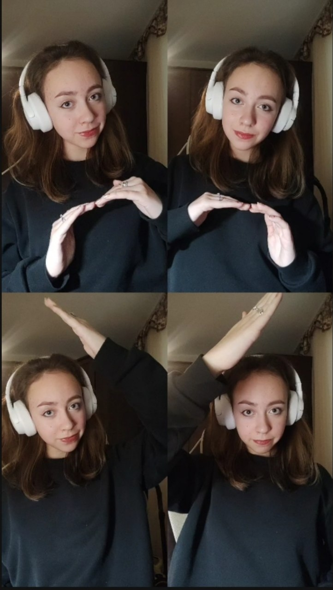
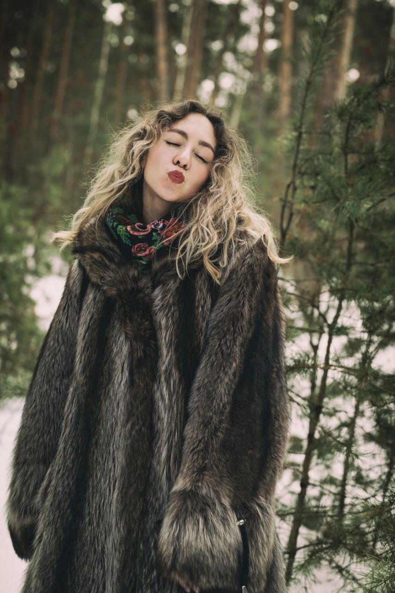
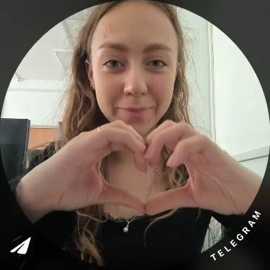
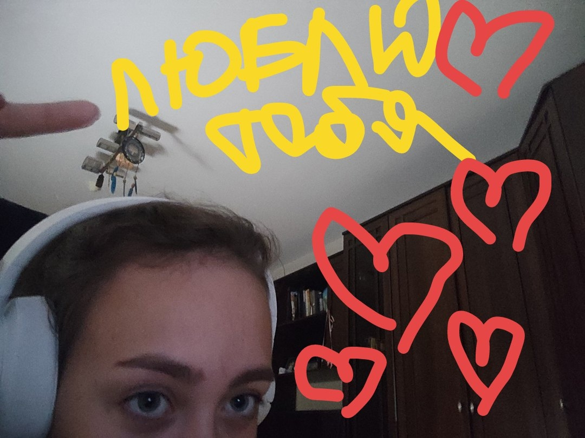

01 / МОЙ ЛЮБИМЫЙ КАДРЗнаешь, иногда всё начинается с одного человека…
Здесь начинается…
мир без границ.
И вдруг обычные дни становятся историями, которые хочется бережно хранить.
Всё самое важное — в деталях
Есть люди, рядом с которыми даже тишина становится уютной.
В улыбках, случайных словах, взглядах и моментах, которые со стороны кажутся совсем простыми, иногда прячется что-то удивительное. Мне захотелось собрать здесь немного такого тепла — и посвятить его тебе.
просто потому что ты — это тыМесто для воспоминаний
Ты — настоящая красота
Три кадра. Тысяча чувств.
И ни одного идеального слова.

A.
B.
C.Здесь будут фотографии, которые заставляют улыбаться.
Привет, ты.
Я долго подбирал слова, но, кажется, главное совсем простое.
Мне нравится узнавать тебя, слушать тебя и ловить те самые моменты, когда разговор никуда не торопится. Рядом с тобой хочется замечать больше хорошего и делиться тем, что для меня важно.
Я не хочу превращать чувства в громкие обещания. Мне просто хочется быть рядом, узнавать тебя ещё лучше, поддерживать, смеяться вместе и создавать наши собственные воспоминания — одно за другим.
И вот к чему я хотел прийти
Мне хочется, чтобы у нашей истории появилось «мы».
Не только в мыслях и мечтах, а по-настоящему. Шаг за шагом, вместе, если ты тоже этого хочешь.
Будешь моей девушкой?
Какой бы ни был твой ответ, пожалуйста, знай: я хотел быть с тобой честным.